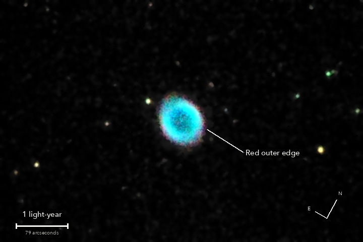

The Ring Nebula
Messier 57, a planetary nebula in Lyra
A dying star has puffed off its outer layers, and the hot core left behind makes them glow: oxygen blue-green, hydrogen and nitrogen red at the edge. It is more barrel than ring, and we look down its length. The Sun will do the same in about 5 billion years.
What you are looking at

Swipe sideways to see the rest. Tap the picture for full size.
- Distance
- About 2,600 light-years
- This picture spans
- 7 light-years
- The light left
- Around 570 BC, about when Pythagoras was born
- The ring is
- About a light-year across: over 60,000 times the distance from the Earth to the Sun
Technical detailsHow this picture was made: the equipment, the exposures and the processing.
© 2026 Brad Gessler · Celestron 8SE (8 inch, 2,082 mm) and Sony a6000 on an EQ6-R · San Francisco Bay Area · night of 8 October 2026
© 2026 Brad Gessler. The pictures and the words are his own; all rights reserved.